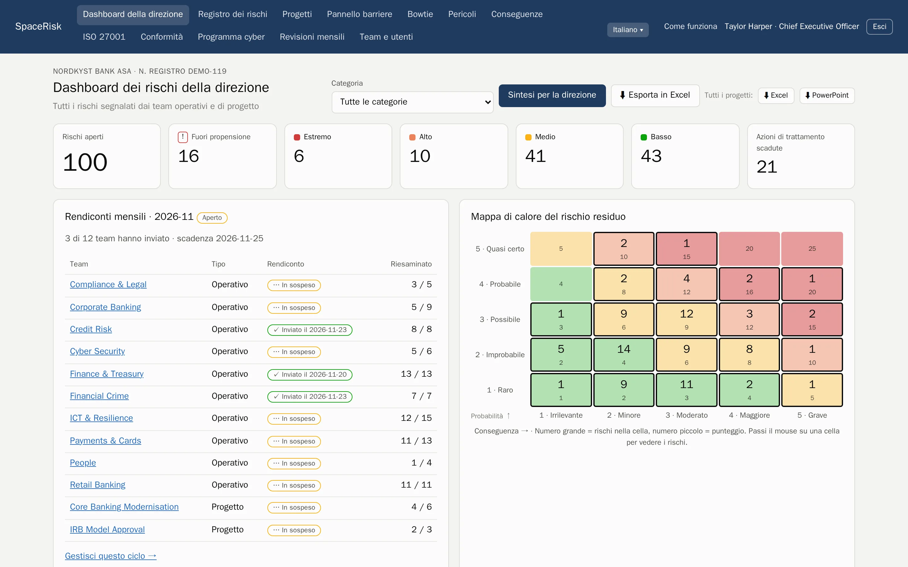
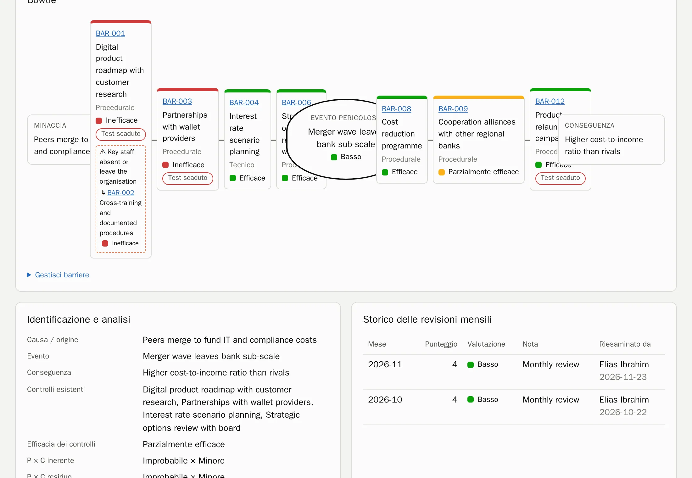
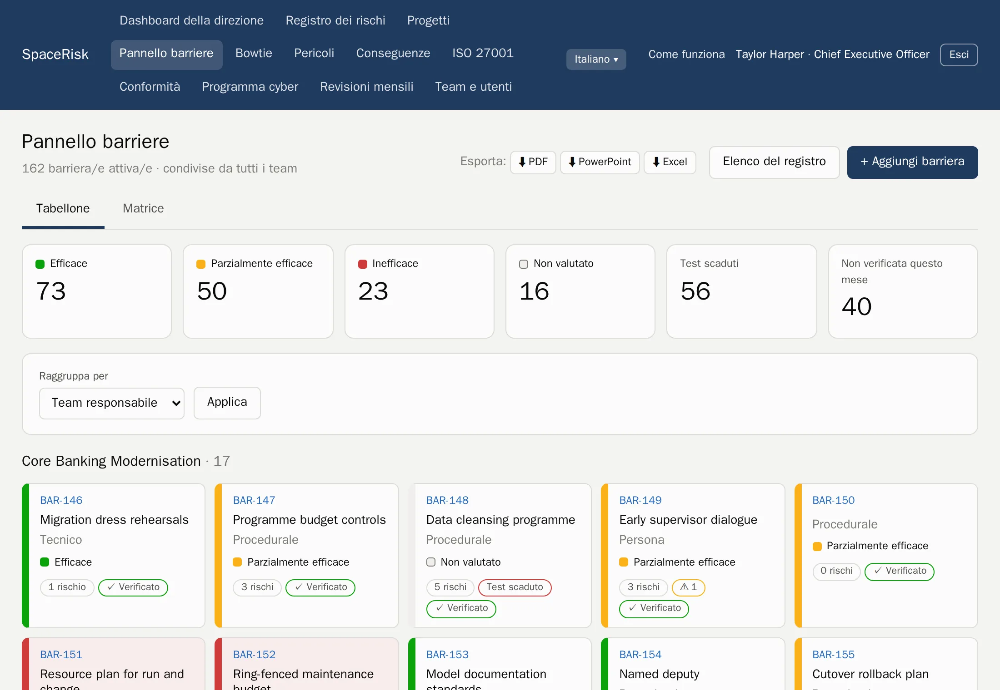
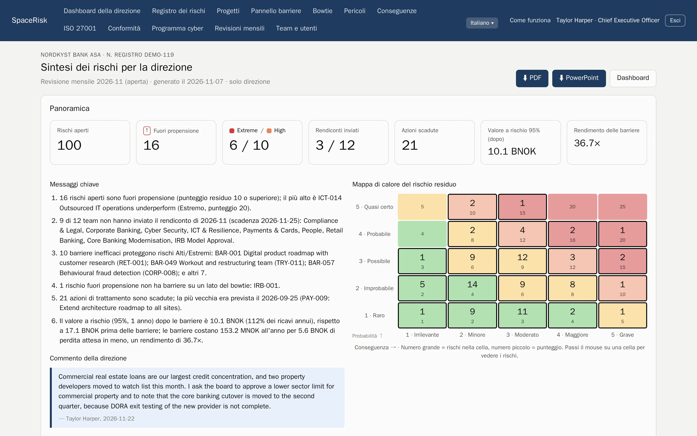
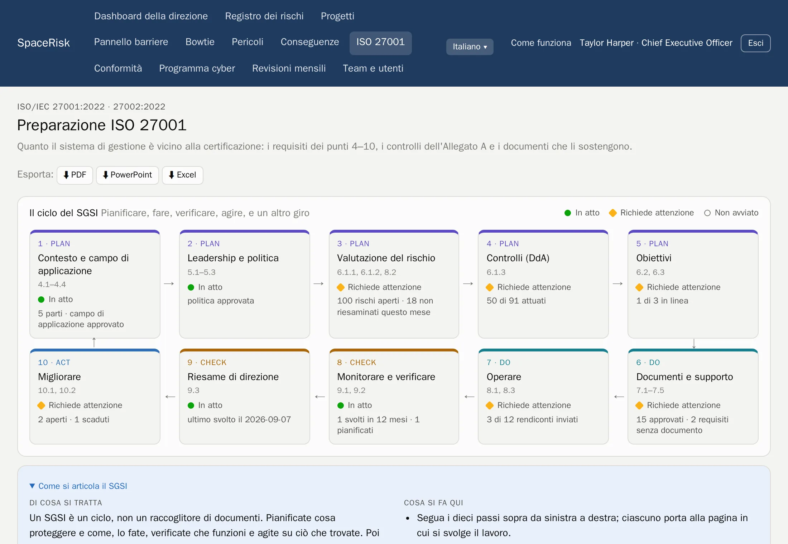
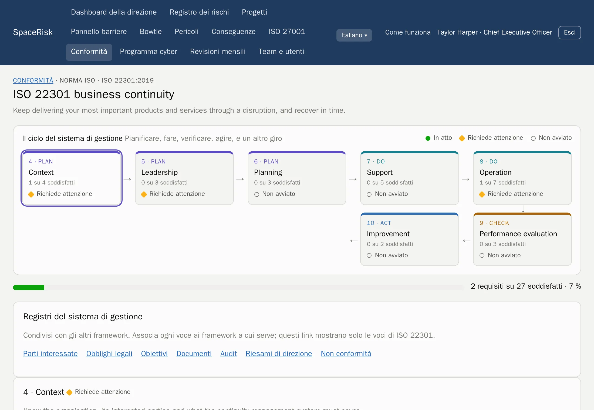
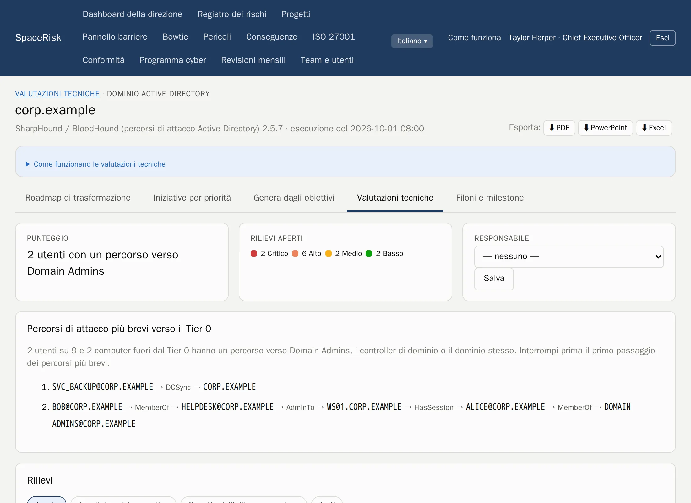
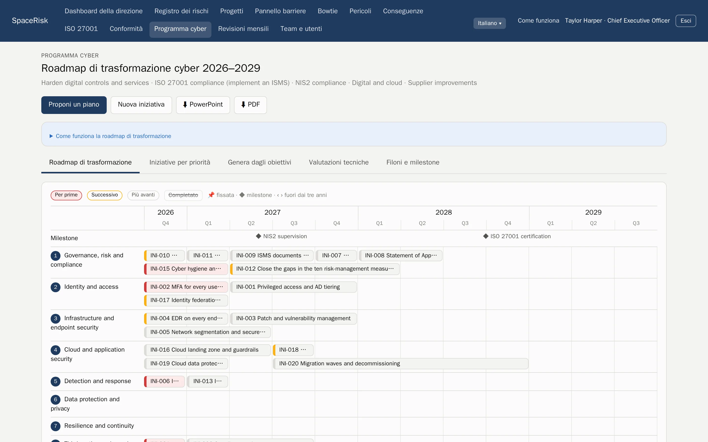

Gestione del rischio ISO 31000
Ogni rischio, dal team al consiglio di amministrazione.
SpaceRisk trasforma i rischi che i vostri team conoscono in bowtie vivi, verifica ogni mese le barriere che li fermano e mostra alla direzione quanto costerebbero.
Ospitato da noi o sui vostri server. I vostri dati restano sempre vostri.

- Banche
- Assicurazioni
- Ospedali
- Petrolio e gas
- Energia elettrica
- Software
- Settore pubblico
- Logistica
- Costruzioni
- Commercio al dettaglio
Come funziona
Il ciclo ISO 31000, dentro il mese.
Nessun progetto di rischio a parte che diventa obsoleto. SpaceRisk applica la norma come un semplice ritmo mensile che ogni team può seguire.
- 1
Definire i criteri
Una scala per probabilità e conseguenza, la vostra propensione al rischio e le vostre categorie.
- 2
Identificare
Team e progetti registrano cosa può andare storto, là dove lavorano.
- 3
Analizzare e ponderare
Livelli inerente, residuo e obiettivo, rispetto alla propensione al rischio.
- 4
Trattare
Barriere e azioni con responsabili e scadenze.
- 5
Monitorare e riesaminare
Ogni mese ogni team riesamina i propri rischi, verifica le barriere e invia il rendiconto.
Bowtie e barriere
Guardate cosa c'è tra una minaccia e il danno.
Ogni rischio è un bowtie: le minacce a sinistra, le conseguenze a destra e le barriere in mezzo. Le barriere stanno in un unico registro condiviso, così un controllo protegge molti rischi e vedete subito quando una barriera debole regge troppo.
- Barriere preventive e di mitigazione, con efficacia e data dell'ultimo test
- Un pannello barriere per tutta l'organizzazione, raggruppato per team responsabile o per tipo
- Fattori di escalation, e le barriere che proteggono le barriere


Revisioni mensili
Un unico ritmo per ogni team.
Ogni mese il team riesamina tutti i rischi che possiede e verifica ogni barriera, poi il responsabile del team invia il rendiconto. Sapete sempre chi è aggiornato, e l'andamento di ogni rischio si costruisce da solo.
- Dashboard per team e per progetto, con mappa di calore e andamento di ogni rischio
- Il rendiconto si può inviare solo quando ogni rischio è stato riesaminato
- Un commento per ogni mese e tutto lo storico per l'auditor
Per la direzione
Il rischio nella lingua del consiglio.
SpaceRisk dà un prezzo all'esposizione: perdita attesa, un Value at Risk simulato prima e dopo le barriere, e il ritorno di ciò che le barriere costano. La sintesi per la direzione scrive da sé i messaggi chiave ed è pronta da presentare.
- VaR 95 %
- simulato, prima e dopo le barriere
- 1 clic
- sintesi per la direzione in PDF o PowerPoint
- Excel
- ogni registro, pronto per l'analisi

Conformità
Un sistema di gestione, molte norme.
Attivate i framework che vi servono. Ognuno mostra il suo ciclo Plan, Do, Check, Act con l'avanzamento in tempo reale e i prossimi passi, e tutti condividono gli stessi registri: parti interessate, obblighi legali, obiettivi, documenti, audit, riesami di direzione e non conformità.
- Disponibile
ISO/IEC 27001 e 27002
Capitoli 4–10, tutti i 93 controlli, una dichiarazione di applicabilità, il ciclo del SGSI ed esportazioni pronte per l'audit.
- Disponibile
ISO 22301
Continuità operativa: il ciclo del sistema di gestione e ogni requisito, con responsabili ed evidenze.
- Disponibile
ISO 45001
Salute e sicurezza sul lavoro, con la partecipazione dei lavoratori e i requisiti di legge.
- In arrivo
NIS2 e DORA
Scadenze di notifica degli incidenti, registri dei fornitori e test di resilienza.
- In arrivo
GDPR e ISO 27701
Registro dei trattamenti, DPIA e richieste degli interessati.
- In arrivo
ISO 42001 e il CRA
Sistemi di gestione dell'IA e sicurezza dei prodotti secondo il Cyber Resilience Act.


Indicazioni, non consulenza legale. I testi dei requisiti sono scritti con parole nostre.
Programma cyber
Dai rilievi di sicurezza a un piano triennale.
Caricate i risultati degli strumenti che il vostro team già usa. SpaceRisk trasforma i rilievi in evidenze per i controlli ISO giusti, trova i percorsi di attacco più brevi verso gli amministratori di dominio e propone un programma prioritizzato su una mappa di trasformazione da portare direttamente al consiglio.
- PingCastle
- Prowler
- SharpHound
- Rilievi, andamenti e correzioni per obiettivo, su ogni esecuzione
- Percorsi di attacco verso il Tier 0 dai dati di Active Directory
- Una mappa di trasformazione con punteggi, esportabile in PowerPoint e PDF


Agenti e API
Lasciate le scartoffie ai vostri agenti. Decidono sempre le persone.
Script e agenti IA hanno i propri token e un'API REST documentata. Segnalano e riesaminano rischi, verificano barriere e caricano risultati degli strumenti. In modalità proposta, ogni modifica attende in una casella finché una persona non la approva.
- Documentazione OpenAPI
- Ogni proposta viene verificata prima che qualcuno la approvi
- I token degli agenti sono salvati come hash
POST /api/v1/risks/ICT-014/review
Authorization: Bearer ••••••••
← 202 in attesa di approvazione nella casella
POST /api/v1/assessments/uploads?tool=pingcastle
Content-Type: application/xml
← 201 risultati salvatiAziende dimostrative
92 aziende da esplorare, dalle banche agli ospedali.
Partite da un mondo che conoscete. Ogni esempio è un'azienda fittizia con i propri team, rischi, barriere e storico, pronta in pochi minuti. Ognuna ha una sintesi per la direzione di esempio in PDF.
Fatto per meritare fiducia.
Ospitato o in casa
Lo gestiamo noi per voi, oppure lo eseguite sui vostri server, Intel o ARM.
I dati sono vostri
Esportate tutto in PDF, PowerPoint, Excel o come backup completo del database, in qualsiasi momento.
Accesso per ruolo
La direzione vede tutto. I team vedono il proprio. Gli importi restano alla direzione.
Sette lingue
Inglese, norvegese, tedesco, spagnolo, francese, italiano e portoghese, per ogni utente.
Guardate SpaceRisk con i vostri rischi.
Raccontateci la vostra organizzazione e prepareremo un esempio che le somigli.